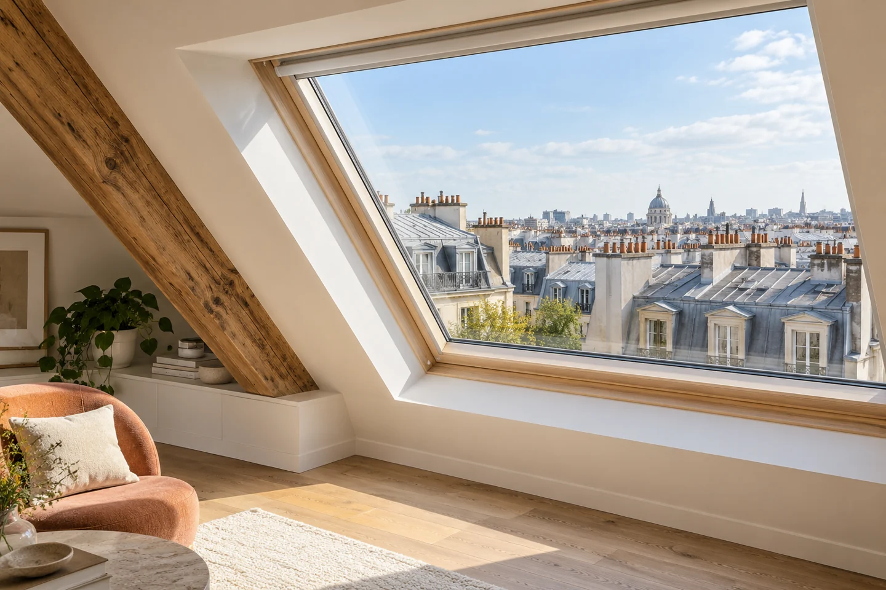

Fenêtre de toit
Étudier une fenêtre de toit selon votre bâtiment et votre projet.

Un examen adapté à votre situation.
L’accès, la configuration de toiture, l’ouverture existante et le confort souhaité permettent de préparer l’étude. Les contraintes du bâtiment et les éventuelles démarches sont à examiner avant les travaux.
Le type de vitrage, l’état du support et les conditions d’accès sont examinés pour préparer une proposition adaptée. Les dimensions définitives et les choix techniques sont validés avec le professionnel.
Un montant confirmé avant votre accord.
Composition du verre, dimensions, pose et horaires font varier le prix. Consultez les repères puis décrivez votre projet.
Consulter les repères tarifairesQuestions fréquentes.
Retrouvez les informations utiles pour préparer votre demande de vitrerie.
01 79 75 79 22Que préparer pour un devis ?
Votre adresse, les dimensions approximatives, le type de vitrage et des photos prises sans s’approcher des éclats de verre.
Peut-on obtenir une mise en sécurité ?
Décrivez le bris de glace et les risques d’accès au téléphone pour organiser une solution temporaire et le remplacement adapté.
Quel délai pour le remplacement ?
Il dépend des dimensions, du verre et de sa fabrication. Le délai précis et une éventuelle protection temporaire sont confirmés avec le professionnel.
Intervenez-vous sur les fenêtres ?
Oui : pose de fenêtres, réglages et remplacement de crémones. Précisez le matériau de votre fenêtre et les symptômes pour préparer la demande.